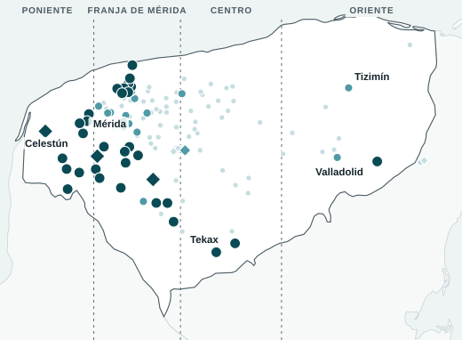
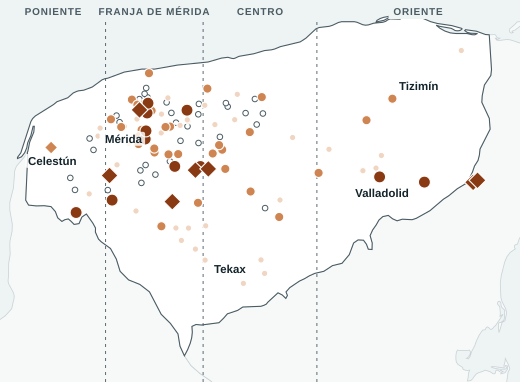
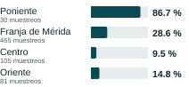
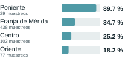
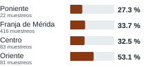
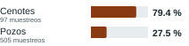
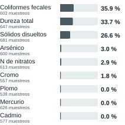

Cada punto es un sitio de la red; el rombo es un cenote y el círculo un pozo. Las líneas punteadas separan las cuatro zonas usadas en este análisis, definidas por longitud: Poniente (al oeste de 89.9° O; sitios de Celestún, Halachó, Kinchil, Maxcanú, Samahil y Tetiz), Franja de Mérida (89.9° a 89.3° O), Centro (89.3° a 88.6° O) y Oriente (al este de 88.6° O). Elaboración del equipo con datos de RENAMECA (CONAGUA); límites estatales de Natural Earth.
Sales. Supera la referencia de sólidos disueltos 86.7 % de los muestreos del Poniente, 28.6 % de la Franja de Mérida, 9.5 % del Centro y 14.8 % del Oriente. De los 34 sitios que la superan en la mitad o más de sus muestreos, 25 están al oeste de 89.6° O.
Dureza. De 89.7 % en el Poniente a 18.2 % en el Oriente.
Bacterias. Hay coliformes fecales en las cuatro zonas: solo en pozos, de 18.2 % a 36.2 % de los muestreos por zona. En cenotes, 79.4 % de 97 muestreos; en pozos, 27.5 % de 505.
Son dos patrones distintos. La salinidad y la dureza varían con la ubicación del sitio: son más frecuentes al poniente, tanto en la zona Poniente como en el occidente de la Franja de Mérida.
La detección de bacterias fecales no se limita a una zona y es más frecuente en los cenotes que en los pozos de la red.
Son asociaciones. No identificamos el origen de ninguno de los dos.
Cada patrón pide un tratamiento diferente. La desinfección es pertinente en las cuatro zonas monitoreadas; atender sales y dureza importa sobre todo en el poniente del estado. La tabla de abajo lo lleva a sitios.
Para quien decide dónde vigilar y tratar, la pregunta útil no es «¿está bien el agua?», sino «¿qué tiene el agua aquí?».
| Zona | Sitios | Ninguno recurrente | Sales o dureza | Bacterias | Ambos |
|---|---|---|---|---|---|
| Poniente | 9 | 0 | 8 | 0 | 1 |
| Franja de Mérida | 69 | 24 | 33 | 9 | 3 |
| Centro | 30 | 22 | 7 | 1 | 0 |
| Oriente | 13 | 6 | 3 | 3 | 1 |
| Yucatán | 121 | 52 | 51 | 13 | 5 |
«Recurrente»: el sitio rebasa la referencia en la mitad o más de sus muestreos (sólidos disueltos o dureza; coliformes fecales). En 33 sitios no se midieron coliformes (15 de «ninguno» y 18 de «sales o dureza»). Los 5 sitios con ambos: un pozo en Chemax, uno en Halachó y uno en Opichén, y dos cenotes, en Chapab y Kopomá.



Solo en pozos, la detección de coliformes por zona es 18.2 % (Poniente, 11 muestreos), 28.0 % (Franja de Mérida, 368), 19.1 % (Centro, 68) y 36.2 % (Oriente, 58).
| Zona | Sitios | Sitios que superan sólidos disueltos en la mitad o más de sus muestreos | Mediana de sólidos disueltos por sitio | Sitios con coliformes medidos | Sitios con alguna detección |
|---|---|---|---|---|---|
| Poniente | 9 | 9 de 9 | 1,506.5 mg/L | 5 | 2 |
| Franja de Mérida | 69 | 21 de 69 | 765.0 mg/L | 48 | 31 |
| Centro | 30 | 2 de 30 | 624.5 mg/L | 22 | 11 |
| Oriente | 13 | 2 de 13 | 765.5 mg/L | 13 | 7 |

Los 8 cenotes de la red tuvieron al menos una detección y 7 la tuvieron en la mitad o más de sus muestreos. De 80 pozos con medición, 43 tuvieron alguna detección y 11 en la mitad o más.

sitios con ocho o más años de datos muestran un aumento significativo de sólidos disueltos. En 3 baja y en 27 no hay tendencia.
Prueba de Mann-Kendall sobre la mediana anual de cada sitio (p < 0.05). Con 30 pruebas se esperan uno o dos resultados significativos por azar.
En esos mismos sitios, la detección de coliformes varió entre 13.8 % y 59.3 % de los muestreos por año de 2012 a 2020, sin una dirección clara (2021 y 2022 tienen menos de 15 muestreos con coliformes). No encontramos señal de deterioro; eso no prueba que no lo haya.
Referencias de la NOM-127-SSA1-2021, en mg/L: dureza 500; sólidos disueltos 1,000; nitrógeno de nitratos 11; cromo 0.05; plomo 0.01; mercurio 0.006; arsénico 0.01 y cadmio 0.003 (límites de cumplimiento gradual, tabla 5). Coliformes fecales: cualquier detección; con el umbral de 1,000 NMP/100 mL, que CONAGUA clasifica como «contaminada», lo superan 7.0 % de los 602 muestreos, en 19 sitios.
Coliformes fecales sobre 1,000 NMP/100 mL. Con un solo valor por sitio (media geométrica), ninguno de los 88 sitios medidos lo supera. Muestreo por muestreo, 19 sitios lo superaron al menos una vez.
Nitrógeno de nitratos sobre 11 mg/L. Con un solo valor por sitio (mediana), lo superan 3 de 121 sitios. Muestreo por muestreo, 14 sitios lo superaron al menos una vez.
El valor por sitio lo calculó el equipo con las reglas que CONAGUA publica para su semáforo; no es el semáforo oficial. Los valores con «<» se tomaron en su límite de detección. Un resumen por sitio sirve para clasificar; el detalle por muestreo muestra los episodios que ese resumen promedia.
| Fuente | Contenido usado | Archivo en esta carpeta |
|---|---|---|
| RENAMECA, CONAGUA. Calidad del agua subterránea, descargado el 13 nov 2026 de gob.mx/conagua | 121 sitios y 683 muestreos de Yucatán, del 24 nov 2012 al 15 nov 2023; 9 parámetros | datos/Subterraneo.xlsb |
| NOM-127-SSA1-2021 (DOF, 2 de mayo de 2022), tablas 2, 4, 5 y 6 | Valores de referencia por parámetro | Nota de referencias |
| CONAGUA (2025). Generalidades de los indicadores de calidad del agua | Reglas del semáforo y escala de coliformes | Procedimiento 6 |
| Natural Earth (dominio público), límites estatales | Contorno de la península para los mapas | datos/peninsula.geojson |
| Revisión | Resultado |
|---|---|
| Recorte a Yucatán por el campo ESTADO | 121 de 2,872 sitios; 683 de 14,519 registros |
| Nombres de municipio con y sin acento o con espacios sobrantes | 75 grafías en la fuente; 64 municipios tras unificar |
| Duplicados de sitio y fecha | 0 |
| Registros sin sitio o sitios sin registros | 0 en Yucatán |
| Coordenadas fuera del estado | 0; dos cenotes de Chemax quedan sobre el límite con Quintana Roo |
| Año frente a fecha del muestreo | Coinciden en los 683 registros |
| Valores bajo el límite de detección («<») | Coliformes 64.1 %; arsénico 96.5 %; cromo 81.9 %; plomo 98.1 %; mercurio 89.9 %; cadmio 100 %; nitratos 3.1 %; sólidos disueltos y dureza 0 % |
| Sitios sin medición de coliformes | 33 de 121, que son los 33 sitios incorporados en 2022. Hay coliformes en 42 de 82 muestreos de 2022 y en ninguno de 2023 |
| Cambios en la red | De 36 a 71 sitios muestreados en 2019; 11 muestreos en 2021; 33 sitios nuevos en 2022 |
La pregunta no cambió. El proyecto toma nombre propio, «Dos mapas bajo Yucatán», por su hallazgo. Se añadieron la definición de zonas y la clasificación por sitio. Cloruros y sodio no se usan como criterio porque la norma vigente no les fija límite.
| LEEME.md | Pasos para reproducir todo |
| datos/ | Archivo original, contorno y tablas derivadas de Yucatán |
| analisis/ | Los cálculos, paso por paso (01 a 03), y su verificación |
| documento/ | Fuente de este PDF y sus figuras |